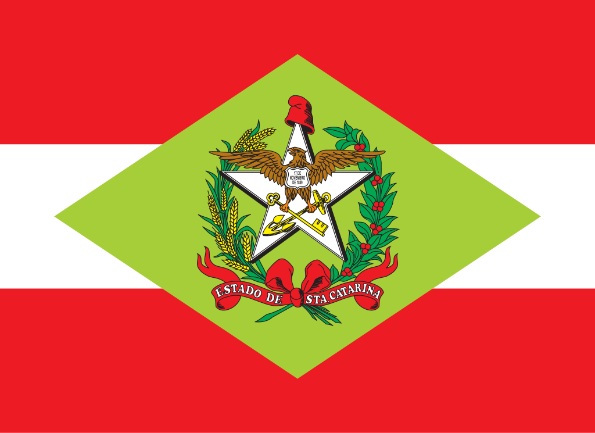
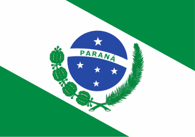
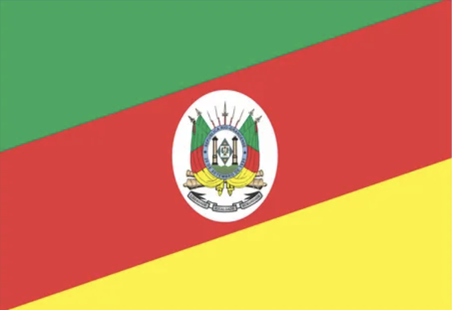
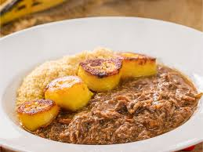
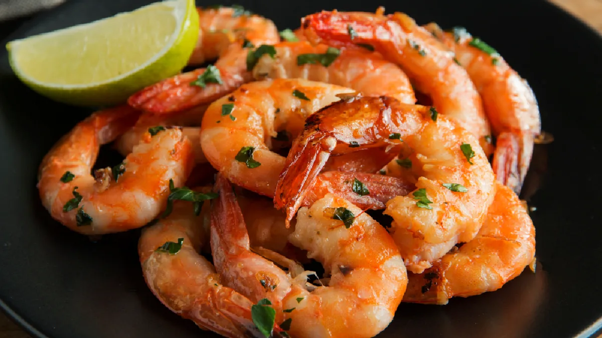
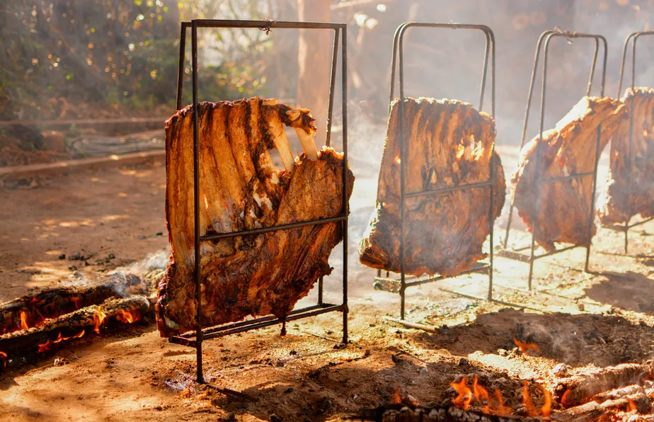

Comidas Típicas da Região Sul
Viagem Gastronomica pela Região Sul
Conheça comidas típicas e curiosidades de três estado do Sul:
Estado
Capital
Comida típica
Bandeiras
Paraná
Curitiba
Barreado

Santa Catarina
Florianópolis
Sequencia de Camarão

Rio Grande do Sul
Porto Alegre
Churrasco Gaúcho

Comidas Típicas da Região Sul
Curiosidades sobre a culiária da Região Sul:
Barreado
,típico do Paraná,é um prato preparado em panela de barro com carne cozida por mai de 12 horas.
]
Saiba mais sobre a culinária do Paraná
Em Santa Catarina, a sequencia de
Camarão
é muito famoso, especialmente na ilha de Florianópolis.

Saiba mais sobre a culinária do Santa Catarina
No Rio Grande do Sul, o
Churrasco Gaúcho
é uma tradição fortíssima, geralmente acompanhado de chimarrão.

Saiba mais sobre a culinária do Rio Grande do Sul
©️ Desenvolvido por Solange dos Santos